index.html の実データから自動生成（python gen_docs.py で再生成）。基礎HP/攻撃は倍率適用前の値。
入手: 精鋭報酬（1個）／章クリア3択（ボス級枠あり）／ショップ（コモン90・レア130・ボス級180、会員証で20%引）／宝箱パズル
| 名前 | レア度 | 効果 | ショップ価格 | 入手 | |
|---|---|---|---|---|---|
| 🗺 | 冒険者の地図 adventmap | コモン | 焚き火に着くとコイン+30 | 180 | 通常 |
| 🍖 | 弁当箱 bento | コモン | 勝利時にHPを8回復する | 180 | 通常 |
| 🛌 | 休息の毛布 blanket | コモン | 焚き火の回復が70%になる | 180 | 通常 |
| 🎲 | いかさまダイス dice | コモン | ショップの品揃えが6品になる | 180 | 通常 |
| 🧱 | 守護の心得 guardbook | コモン | 防御ドロップ1個の効果+2 | 180 | 通常 |
| ⚒ | 鍛冶ハンマー hammer | コモン | 鍛える費用が半額（25）になる | 180 | 通常 |
| 🌿 | 携帯薬草 herb | コモン | ポーションの回復が120になる | 180 | 通常 |
| 💧 | 聖水 holywater | コモン | 回復ドロップ1個の効果+1 | 180 | 通常 |
| 🏷 | 会員証 member | コモン | ショップの価格が20%安くなる | 180 | 通常 |
| 🐖 | 小さな貯金箱 piggy | コモン | 勝利時にコイン+10 | 180 | 通常 |
| 🔨 | 破城槌 ram | コモン | 敵シールドへのダメージ2倍 | 180 | 通常 |
| 💗 | 再生の護符 regen | コモン | ターン終了時にHPを2回復する | 180 | 通常 |
| 🧂 | 清めの塩 salt | コモン | 敵のお邪魔変換数-1 | 180 | 通常 |
| ⚔ | 剣術指南書 swordbook | コモン | 攻撃ドロップ1個の効果+2 | 180 | 通常 |
| 🟡 | 琥珀の核 ambercore | レア | 黄ドロップを消すと、消した各黄の上下も爆破（1ターンに1回） | 280 | 通常 |
| | 天使の羽根 angelfeather | レア | 賭けで払うHPが半分になる（端数は切り上げ） | 280 | 賭博師ジン専用 |
| 🛠 | 名工の金床 anvil | レア | 補充で得る素材が2倍になる | 280 | 鍛冶師ブロム専用 |
| 💥 | 爆心の石 blastcore | レア | 1個だけで消すと周囲3×3も爆破（1ターンに1回） | 280 | 通常 |
| ✚ | 十字晶 crossgem | レア | 縦か横1直線の4個で消すと、タップ位置から十字1列を爆破（1ターンに1回） | 280 | ボス/精鋭報酬限定 |
| 💀 | 死神の刻印 deathmark | レア | 雑魚敵がHP10%減った状態で出現 | 280 | 通常 |
| 😈 | 悪魔の契約 devilpact | レア | 「悪魔」を選んで当てたときだけ、賭けの効果1.5倍 | 280 | 賭博師ジン専用 |
| 🪬 | 守護の指輪 guardring | レア | 毎ターン防御+10の状態で始まる | 280 | 通常 |
| 🌱 | 薬草学の書 healbook | レア | 回復ドロップ1個の効果+2 | 280 | 通常 |
| 🟢 | 翠玉の核 jadecore | レア | 翠ドロップを消すと、消した各翠の上下も爆破（1ターンに1回） | 280 | 通常 |
| 🍎 | 生命の果実 lifefruit | レア | 取得時、最大HPを40増やす | 280 | 通常 |
| 🪙 | 幸運の銀貨 luckcoin | レア | 賭けに外れても、効果の50%だけはもらえる | 280 | 賭博師ジン専用 |
| 🧲 | 磁石の指輪 magnet | レア | 勝利報酬の選択肢が4つになる | 280 | 通常 |
| 🌫 | 霧のマント mist | レア | 各戦闘の1ターン目、受けるダメージ半減 | 280 | 通常 |
| 🎨 | 虹のパレット palette | レア | 色変えで塗ったグループが6個以上なら、その中の1個が虹ドロップになる | 280 | 彩の魔女イリス専用 |
| 🎒 | 大きなポーチ pouch | レア | 消費アイテムを4個持てる | 280 | 通常 |
| 📿 | 聖者の祈祷書 prayerbook | レア | 回復が最大HPを超えたぶん、次のターンの防御になる（最大30） | 280 | 賢者アルド専用 |
| 🌋 | 紅蓮の核 redcore | レア | 赤ドロップを消すと、消した各赤の上下も爆破（1ターンに1回） | 280 | 通常 |
| ⚖ | 商人の天秤 scale | レア | コイン獲得が1.5倍になる | 280 | 通常 |
| 🛡 | 重盾の紋章 shieldcrest | レア | 防御ドロップ1個の効果+2 | 280 | 通常 |
| 📖 | 星読みの書 starbook | レア | ★の発動個数が1減る | 280 | 通常 |
| ✨ | 星のかけら stardust | レア | 盤面の特殊ドロップ+1 | 280 | 通常 |
| 🌠 | 星辰の錫杖 starstaff | レア | ターン開始時、盤面に虹ドロップが無ければランダム1個が虹になる | 280 | 月の司祭セレネ専用 |
| 🧮 | 累積の指輪 storegem | レア | 蓄積の増加量が1ドロップにつき+2になる（通常+1） | 280 | 賢者ノア専用 |
| 🗡 | 剛剣の紋章 swordcrest | レア | 攻撃ドロップ1個の効果+1 | 280 | 通常 |
| 🟣 | 紫晶の核 violetcore | レア | 紫ドロップを消すと、消した各紫の上下も爆破（1ターンに1回） | 280 | 通常 |
| ⚔️ | 闘気の触媒 warforge | レア | 強化の増加量が1ドロップにつき+0.2になる（通常+0.1） | 280 | 重騎士ガレス専用 |
| 📯 | 軍神の号令 warhorn | レア | 強化が、選んでいない側のステータスにも半分かかる | 280 | 重騎士ガレス専用 |
| 💍 | 闘志の指輪 warring | レア | 毎ターン攻撃+10の状態で始まる | 280 | 通常 |
| 🏰 | イージスの大盾 aegis_gr | ボス級 | 防御ドロップ1個の効果+3 | 460 | 通常 |
| 🌟 | 大星晶 bigstar | ボス級 | 盤面の特殊ドロップ+2 | 460 | 通常 |
| 👑 | 王家の印章 crown | ボス級 | 章クリア時に最大HPを50増やす（通常はボーナスなし） | 460 | 通常 |
| 🐉 | 竜牙の剣 dragonblade | ボス級 | 攻撃ドロップ1個の効果+3 | 460 | 通常 |
| 🌈 | 虹福の玉 gachagem | ボス級 | 同じ色を6個以上消すと、所持中の特殊から1つが虹ドロップになって生まれる。どの色とも繋がる | 460 | 通常 |
| ⛓ | 鉄の意志 ironwill | ボス級 | 余った防御の半分を次のターンに持ち越す | 460 | 通常 |
| ↕️ | 縦裂の宝珠 linegem | ボス級 | 同じ色をちょうど5個消すと、消した所に虹ドロップ（消すと縦1列消し）が生まれる。どの色とも繋がるがお邪魔とは繋がらない | 460 | 通常 |
| ↔️ | 横薙の宝珠 linegemh | ボス級 | 同じ色をちょうど5個消すと、消した所に虹ドロップ（消すと横1列消し）が生まれる。どの色とも繋がるがお邪魔とは繋がらない | 460 | 通常 |
| 🔮 | プリズム prism | ボス級 | ターン開始時、盤面の最少色が他の色に変わる（3色になる） | 460 | 通常 |
| 👼 | 聖女の祈り saintprayer | ボス級 | 回復ドロップ1個の効果+3 | 460 | 通常 |
| 🔥 | 覇気の触媒 warforge2 | ボス級 | 強化の増加量が1ドロップにつき+0.3になる（通常+0.1） | 460 | 重騎士ガレス専用 |
| ❌ | X字晶 xgem | ボス級 | ちょうど5個で消すと、タップ位置から斜め4方向を爆破 | 460 | 通常 |
初期の袋: 剣3・盾3・回復3（ノアのみ 剣2・盾2・回復2・蓄積石3）。その他は勝利報酬・虹福などで獲得。
剣/盾の値は同時に消したドロップ数に比例（1個につき+5、強化+10）。
| 名前 | 通常効果 | 強化効果（焚き火の🔨鍛える・50G） | 備考 | |
|---|---|---|---|---|
| スター star | 6個以上同時消しで効果2倍 | 6個以上の同時消しで効果3倍 | － | |
| プラス plus | 消した数を+1する | 消した数を+2する | － | |
| トリプル three | ちょうど3個で消すと3倍 | ちょうど3個で消すと4倍 | － | |
| 貫通 pierce | 消すとこのターンの攻撃が敵を貫通する | 貫通＋消した数を+1する | － | |
| クロスボム bombx | 消すと上下左右のドロップも巻き込んで消す | 周囲8マスのドロップも巻き込んで消す | － | |
| Xボム bombd | 消すと斜め4方向のドロップも巻き込んで消す | 周囲8マスのドロップも巻き込んで消す | － | |
| 乱れ斬り aoe | 攻撃で消すと、このターンの攻撃が敵全体に当たる | 全体攻撃＋攻撃の効果1.2倍 | － | |
| 金貨 gold | 消すとコイン+5 | 消すとコイン+12 | － | |
| サンダー bolt | 6個以上の同色を消すと、同色が盤面全体から消える | 同色全消し＋消した数を+3する | － | |
| ヒール heal | 消すとHPを10回復する | 消すとHPを25回復する | － | |
| ガード def | 同時に消したドロップ1つにつき防御+5 | 同時に消したドロップ1つにつき防御+10 | － | |
| ソード atk | 同時に消したドロップ1つにつき攻撃+5 | 同時に消したドロップ1つにつき攻撃+10 | － | |
| 猛攻 atkx | 攻撃で消すと効果2倍・数が多いほど倍率アップ（2個で3倍） | 倍率がさらに+1（＋化1個で×3） | － | |
| 鉄壁 defx | 防御で消すと効果2倍・数が多いほど倍率アップ（2個で3倍） | 倍率がさらに+1（＋化1個で×3） | － | |
| 蓄積石 store | どの色で消しても蓄積が+2される | 消すと蓄積が+4される | ノア専用（初期所持のみ・報酬に出ない） | |
| 闘魂 warcry | 強化で消すと1個につき倍率+0.2 | 強化で消すと1個につき倍率+0.4 | ノア専用（初期所持のみ・報酬に出ない） | |
| 星のしずく wildstar | 消すと落ちてくるドロップの1個が虹になる | 消すと落ちてくるドロップの2個が虹になる | ノア専用（初期所持のみ・報酬に出ない） | |
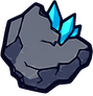 | 魔鉱石 ore | 消すと鍛冶の素材が+1される | 消すと素材が+2される | ノア専用（初期所持のみ・報酬に出ない） |
| 賭けチップ chip | 賭けに外れたとき、1個につき1回だけコイントスをやり直す | 1個につき2回コイントスをやり直す | ノア専用（初期所持のみ・報酬に出ない） | |
| ↕ | 縦裂の虹 linev | 消すと縦1列をまとめて消す。どの色とも繋がる | － | レリック（縦裂/横薙の宝珠・虹福の玉）の生成限定。袋には入らない |
| ↔ | 横薙の虹 lineh | 消すと横1列をまとめて消す。どの色とも繋がる | － | レリック（縦裂/横薙の宝珠・虹福の玉）の生成限定。袋には入らない |
| 名前 | 効果 | 価格 | |
|---|---|---|---|
| 🧪 | ポーション | HPを80回復する | 90 |
| 💪 | 剛力の薬 | このターン、攻撃の効果2倍 | 110 |
| 🛡 | 守護の薬 | このターン、防御の効果2倍 | 110 |
| 🎨 | 変換の書 | 最少色のドロップを最多色に変える | 120 |
| 🧹 | 浄化の書 | お邪魔ドロップを全て通常色に戻す | 100 |
| ⏳ | 時止めの砂 | このターン敵は行動できない | 150 |
| 💣 | 爆裂瓶 | 敵全体に80ダメージ | 120 |
| 🐍 | 弱体の毒 | 敵全体の攻撃力を25%下げる（この戦闘中） | 110 |
| 💎 | 星降りの粉 | 盤面に特殊ドロップを3個追加 | 120 |
| 🪶 | 不死鳥の羽 | 倒れたとき自動で復活する（HP40%） | 240 |
プール: スライム(軽・中)、コウモリ(軽)、シルバウルフ(軽・中)、キラービー(軽)、ヨルガラス(軽・中)、イタズラピクシー(軽・中)、スポア(中)、マンドレイク(中・重)、妖狐コンコ(中・重)、インプ(重)、タックボア(重)、アイアンスネイル(重)（軽=群れ/序盤枠・中=中盤枠・重=強敵/終盤枠）
| 名前 | 基礎HP | 基礎攻撃 | 行動パターン（出現時に抽選） | シールド(確率) | 特性 | |
|---|---|---|---|---|---|---|
| スライム slime | 130 | 30 | こうげき こうげき→こうげき→れんぞく こうげき→れんぞく→こうげき | － | － | |
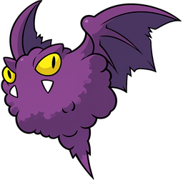 | コウモリ bat | 120 | 30 | れんぞく こうげき→れんぞく れんぞく→れんぞく→こうげき こうげき→こうげき→れんぞく | － | － |
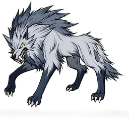 | シルバウルフ wolf | 125 | 32 | こうげき→れんぞく れんぞく→こうげき こうげき→こうげき→れんぞく れんぞく→れんぞく | － | － |
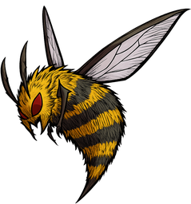 | キラービー bee | 120 | 30 | れんぞく れんぞく→れんぞく→こうげき どく→れんぞく | － | － |
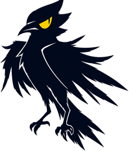 | ヨルガラス crow | 120 | 30 | こうげき れんぞく→こうげき れんぞく→れんぞく→こうげき | 12（35%） | － |
| イタズラピクシー pixie | 120 | 30 | おじゃま→こうげき 呪撃→おじゃま おじゃま→れんぞく | － | お邪魔2個 | |
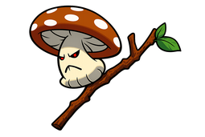 | スポア spore | 120 | 30 | なかま回復 なかま回復→こうげき なかま回復→なかま回復→こうげき | － | 仲間回復×1.6 |
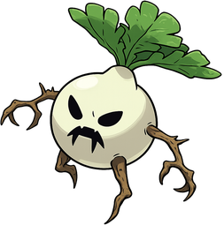 | マンドレイク mandra | 130 | 30 | おじゃま→こうげき なかま回復→おじゃま 呪撃→なかま回復 なかま回復→呪撃 | － | お邪魔2個 |
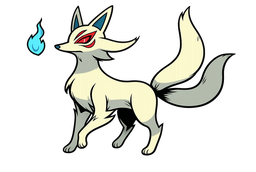 | 妖狐コンコ fox | 125 | 31 | 吸血→こうげき 吸血 吸血→れんぞく | － | － |
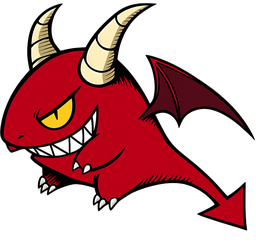 | インプ imp | 150 | 34 | こうげき→こうげき→おおわざ れんぞく→こうげき→おおわざ こうげき→おおわざ れんぞく→おおわざ | － | 大技×1.9（雑魚は2.4上限） |
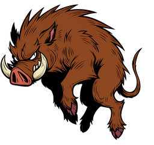 | タックボア boar | 140 | 31 | ためる→おおわざ こうげき→ためる→おおわざ れんぞく→ためる→おおわざ | 15（50%） | 大技×2.2（雑魚は2.4上限） |
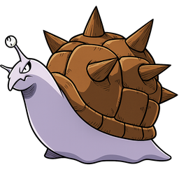 | アイアンスネイル snail | 200 | 30 | こうげき ためる→おおわざ→こうげき こうげき→こうげき→ためる→おおわざ | 25（55%） | － |
ボス候補:
| 名前 | 基礎HP | 基礎攻撃 | 行動パターン（出現時に抽選） | シールド(確率) | 特性 | |
|---|---|---|---|---|---|---|
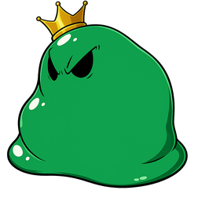 | キングスライム kslime | 520 | 70 | こうげき→おじゃま→おおわざ 呪撃→こうげき→おおわざ こうげき→こうげき→ためる→おおわざ | 25（40%） | 大技×2、お邪魔3個 |
| 古樹トレント treant | 580 | 66 | ためる→おおわざ→こうげき こうげき→ためる→おおわざ | 40（50%） | 大技×2.8 | |
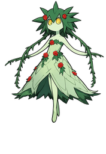 | 森妃アルラウネ alraune | 540 | 68 | おじゃま→ためる→おおわざ 呪撃→ためる→おおわざ おじゃま→なかま回復→ためる→おおわざ | 30（45%） | 大技×2.6、お邪魔3個 |
プール: コウモリ(軽)、シェイド(軽・中)、ヌマウナギ(軽・中)、ウィルウィスプ(軽・中)、ドクガエル(軽・中)、ヘドロスライム(中)、スポア(中)、ロックタートル(中・重)、ゴーレム(重)、マッドマン(重)、シザークラブ(重)、サソリオン(重)（軽=群れ/序盤枠・中=中盤枠・重=強敵/終盤枠）
| 名前 | 基礎HP | 基礎攻撃 | 行動パターン（出現時に抽選） | シールド(確率) | 特性 | |
|---|---|---|---|---|---|---|
| コウモリ bat | 120 | 30 | れんぞく こうげき→れんぞく れんぞく→れんぞく→こうげき こうげき→こうげき→れんぞく | － | － | |
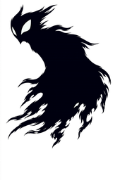 | シェイド shade | 150 | 32 | おじゃま→こうげき 呪撃→こうげき おじゃま→ためる→おおわざ おじゃま→吸血 呪撃→ためる→おおわざ | － | 大技×1.8（雑魚は2.4上限）、お邪魔3個 |
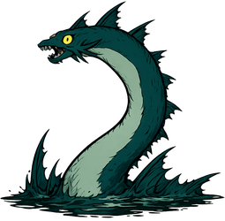 | ヌマウナギ eel | 125 | 30 | れんぞく れんぞく→こうげき こうげき→れんぞく→れんぞく | － | － |
| ウィルウィスプ wisp | 120 | 30 | 吸血 吸血→おじゃま 吸血→呪撃 | － | お邪魔2個 | |
| ドクガエル toad | 135 | 31 | こうげき→おじゃま 呪撃→れんぞく どく→こうげき どく→おじゃま→こうげき | 15（45%） | お邪魔3個 | |
| ヘドロスライム sludge | 135 | 30 | おじゃま→こうげき 呪撃→こうげき どく→おじゃま→こうげき | － | お邪魔3個 | |
| スポア spore | 120 | 30 | なかま回復 なかま回復→こうげき なかま回復→なかま回復→こうげき | － | 仲間回復×1.6 | |
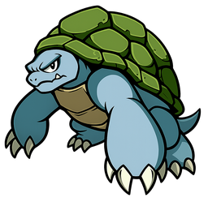 | ロックタートル turtle | 195 | 30 | ためる→おおわざ ためる→ためる→おおわざ こうげき→ためる→ためる→おおわざ | 30（55%） | 大技×2.4（雑魚は2.4上限） |
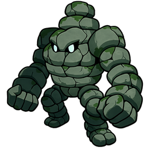 | ゴーレム golem | 230 | 30 | ためる→ためる→おおわざ ためる→おおわざ→こうげき こうげき→ためる→おおわざ こうげき→こうげき→ためる→おおわざ | 25（45%） | 大技×3.2（雑魚は2.4上限） |
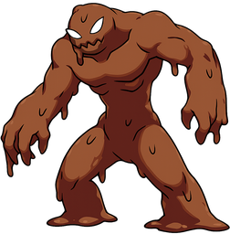 | マッドマン mudman | 170 | 32 | ためる→おおわざ→こうげき こうげき→ためる→おおわざ | 20（50%） | 大技×2.5（雑魚は2.4上限） |
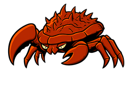 | シザークラブ crab | 160 | 32 | こうげき→こうげき→おおわざ れんぞく→ためる→おおわざ | 22（50%） | 大技×2（雑魚は2.4上限） |
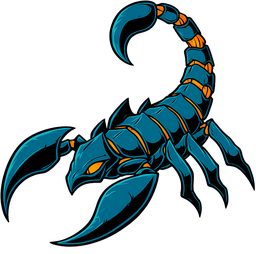 | サソリオン scorp | 150 | 33 | こうげき→ためる→おおわざ れんぞく→ためる→おおわざ どく→ためる→おおわざ | － | 大技×2.3（雑魚は2.4上限） |
ボス候補:
| 名前 | 基礎HP | 基礎攻撃 | 行動パターン（出現時に抽選） | シールド(確率) | 特性 | |
|---|---|---|---|---|---|---|
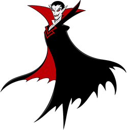 | ヴァンピール vamp | 780 | 82 | 吸血→こうげき→ためる→おおわざ 吸血→れんぞく→ためる→おおわざ | 25（40%） | 大技×2.4 |
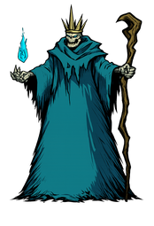 | 死霊王リッチ lich | 740 | 78 | おじゃま→吸血→ためる→おおわざ 呪撃→吸血→ためる→おおわざ 吸血→おじゃま→ためる→おおわざ | 35（45%） | 大技×2.2、お邪魔4個 |
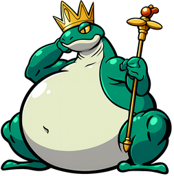 | 大王ガマ toadking | 760 | 80 | れんぞく→おじゃま→どく→ためる→おおわざ どく→れんぞく→ためる→おおわざ | 30（40%） | 大技×2.3、お邪魔3個 |
プール: シェイド(軽)、ヘルハウンド(軽・中)、スケルトン兵(軽・中)、サラマンドラ(軽・中)、サソリオン(中)、フレイムメイジ(中)、スポア(中)、亡霊騎士レイス(中・重)、ゴーレム(重)、ガーゴイル(重)、ダークナイト(重)、ボムデビル(重)（軽=群れ/序盤枠・中=中盤枠・重=強敵/終盤枠）
| 名前 | 基礎HP | 基礎攻撃 | 行動パターン（出現時に抽選） | シールド(確率) | 特性 | |
|---|---|---|---|---|---|---|
| シェイド shade | 150 | 32 | おじゃま→こうげき 呪撃→こうげき おじゃま→ためる→おおわざ おじゃま→吸血 呪撃→ためる→おおわざ | － | 大技×1.8（雑魚は2.4上限）、お邪魔3個 | |
| ヘルハウンド hound | 130 | 31 | れんぞく→こうげき→おおわざ れんぞく→れんぞく→おおわざ | － | 大技×2（雑魚は2.4上限） | |
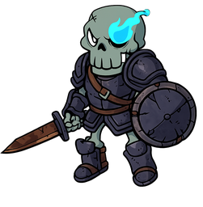 | スケルトン兵 skel | 145 | 31 | こうげき→こうげき→れんぞく れんぞく→こうげき→こうげき | 15（40%） | － |
| サソリオン scorp | 150 | 33 | こうげき→ためる→おおわざ れんぞく→ためる→おおわざ どく→ためる→おおわざ | － | 大技×2.3（雑魚は2.4上限） | |
| フレイムメイジ ifrita | 135 | 33 | おじゃま→ためる→おおわざ 呪撃→ためる→おおわざ こうげき→おじゃま→ためる→おおわざ | － | 大技×2.4（雑魚は2.4上限）、お邪魔3個 | |
| スポア spore | 120 | 30 | なかま回復 なかま回復→こうげき なかま回復→なかま回復→こうげき | － | 仲間回復×1.6 | |
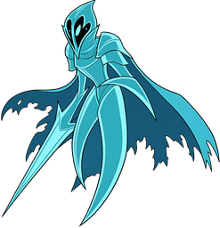 | 亡霊騎士レイス wraith | 155 | 33 | 吸血→ためる→おおわざ 吸血→れんぞく→ためる→おおわざ | － | 大技×2.2（雑魚は2.4上限） |
| ゴーレム golem | 230 | 30 | ためる→ためる→おおわざ ためる→おおわざ→こうげき こうげき→ためる→おおわざ こうげき→こうげき→ためる→おおわざ | 25（45%） | 大技×3.2（雑魚は2.4上限） | |
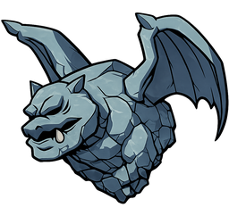 | ガーゴイル gargo | 190 | 31 | ためる→おおわざ こうげき→ためる→おおわざ ためる→ためる→おおわざ れんぞく→ためる→おおわざ | 30（55%） | 大技×2.2（雑魚は2.4上限） |
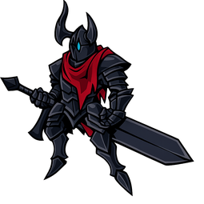 | ダークナイト knight | 180 | 34 | こうげき→こうげき→おおわざ れんぞく→ためる→おおわざ こうげき→ためる→おおわざ→れんぞく | 25（50%） | 大技×2.2（雑魚は2.4上限） |
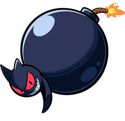 | ボムデビル bomber | 130 | 32 | ためる→おおわざ こうげき→ためる→おおわざ | － | 大技×3（雑魚は2.4上限） |
ボス候補:
| 名前 | 基礎HP | 基礎攻撃 | 行動パターン（出現時に抽選） | シールド(確率) | 特性 | |
|---|---|---|---|---|---|---|
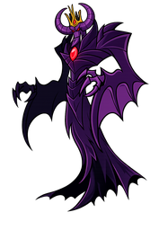 | 魔王ヴァルガ demon | 1050 | 95 | こうげき→おじゃま→ためる→おおわざ おじゃま→こうげき→ためる→おおわざ 呪撃→ためる→おおわざ→こうげき こうげき→れんぞく→ためる→おおわざ | 50（45%） | 大技×2.4、お邪魔4個 |
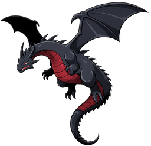 | 黒竜ファヴニル dragon | 1100 | 98 | こうげき→ためる→おおわざ→れんぞく れんぞく→ためる→おおわざ→こうげき | 60（45%） | 大技×2.2 |
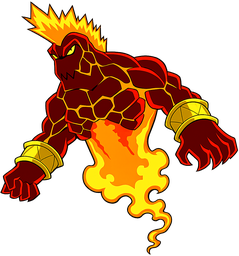 | 炎魔イフリート ifrit | 1080 | 96 | こうげき→れんぞく→ためる→おおわざ れんぞく→こうげき→ためる→おおわざ | 45（45%） | 大技×2.3 |
| 死神モルス reaper | 1150 | 100 | 吸血→ためる→おおわざ→おじゃま 吸血→ためる→おおわざ→呪撃 呪撃→吸血→ためる→おおわざ | 70（40%） | 大技×2.4、お邪魔4個 |
各キャラで表3章クリア→そのキャラで挑戦可能。最終章のボスは真魔王ヴァルガ固定。
プール: ヤミモスラ(軽・中)、ヨミフクロウ(軽)、シャドウマンティス(軽・中・重)、妖狐コンコ(軽)、ヨルガラス(軽)、イバラビースト(中・重)、ダークドライアド(中・重)、シルバウルフ(中)、アイアンスネイル(重)、タックボア(重)（軽=群れ/序盤枠・中=中盤枠・重=強敵/終盤枠）
| 名前 | 基礎HP | 基礎攻撃 | 行動パターン（出現時に抽選） | シールド(確率) | 特性 | |
|---|---|---|---|---|---|---|
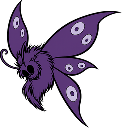 | ヤミモスラ moth | 160 | 36 | どく→こうげき どく→れんぞく どく→おじゃま→れんぞく | － | お邪魔2個 |
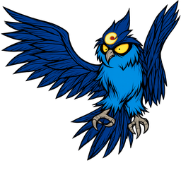 | ヨミフクロウ owl | 155 | 36 | ためる→おおわざ こうげき→ためる→おおわざ れんぞく→ためる→おおわざ | － | 大技×2.2（雑魚は2.4上限） |
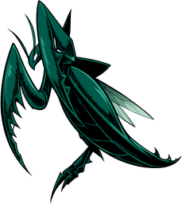 | シャドウマンティス mant | 170 | 40 | れんぞく れんぞく→こうげき れんぞく→れんぞく→こうげき | － | － |
| 妖狐コンコ fox | 125 | 31 | 吸血→こうげき 吸血 吸血→れんぞく | － | － | |
| ヨルガラス crow | 120 | 30 | こうげき れんぞく→こうげき れんぞく→れんぞく→こうげき | 12（35%） | － | |
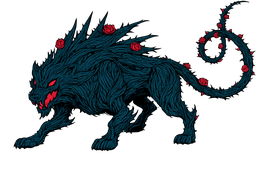 | イバラビースト thorn | 185 | 38 | こうげき→れんぞく こうげき→こうげき→れんぞく れんぞく→れんぞく→こうげき | 15（45%） | － |
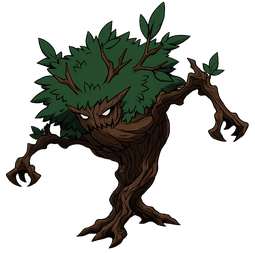 | ダークドライアド dryad | 165 | 35 | なかま回復→おじゃま おじゃま→こうげき なかま回復→こうげき なかま回復→呪撃 | － | お邪魔3個、仲間回復×1.7 |
| シルバウルフ wolf | 125 | 32 | こうげき→れんぞく れんぞく→こうげき こうげき→こうげき→れんぞく れんぞく→れんぞく | － | － | |
| アイアンスネイル snail | 200 | 30 | こうげき ためる→おおわざ→こうげき こうげき→こうげき→ためる→おおわざ | 25（55%） | － | |
| タックボア boar | 140 | 31 | ためる→おおわざ こうげき→ためる→おおわざ れんぞく→ためる→おおわざ | 15（50%） | 大技×2.2（雑魚は2.4上限） |
ボス候補:
| 名前 | 基礎HP | 基礎攻撃 | 行動パターン（出現時に抽選） | シールド(確率) | 特性 | |
|---|---|---|---|---|---|---|
| 月狼王フェンリル fenrir | 1250 | 100 | れんぞく→こうげき→ためる→おおわざ こうげき→れんぞく→ためる→おおわざ | 50（40%） | 大技×2.4 | |
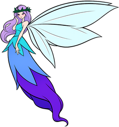 | 幻妖女王ティターニア titania | 1150 | 95 | おじゃま→吸血→ためる→おおわざ 呪撃→こうげき→ためる→おおわざ なかま回復→おじゃま→ためる→おおわざ | 40（40%） | 大技×2.3、お邪魔4個 |
プール: フロストウィスプ(軽・中)、ブリザードペンギン(軽・中)、フロストウルフ(軽・中)、ウィルウィスプ(軽)、イエティ(中・重)、ダークドライアド(中)、アイスゴーレム(重)、ロックタートル(重)、シザークラブ(重)（軽=群れ/序盤枠・中=中盤枠・重=強敵/終盤枠）
| 名前 | 基礎HP | 基礎攻撃 | 行動パターン（出現時に抽選） | シールド(確率) | 特性 | |
|---|---|---|---|---|---|---|
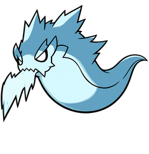 | フロストウィスプ frost | 150 | 36 | 吸血 吸血→おじゃま 吸血→呪撃 | － | お邪魔2個 |
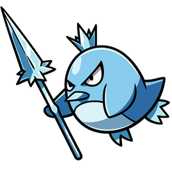 | ブリザードペンギン peng | 170 | 36 | おじゃま→こうげき 呪撃→れんぞく おじゃま→れんぞく→こうげき | － | お邪魔3個 |
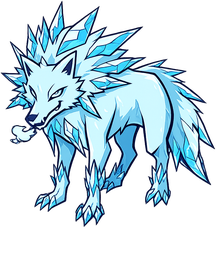 | フロストウルフ icewolf | 180 | 40 | れんぞく→こうげき こうげき→れんぞく れんぞく→れんぞく→こうげき | － | － |
| ウィルウィスプ wisp | 120 | 30 | 吸血 吸血→おじゃま 吸血→呪撃 | － | お邪魔2個 | |
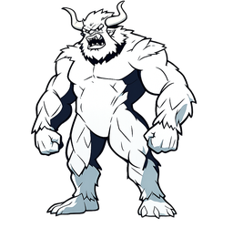 | イエティ yeti | 240 | 38 | ためる→おおわざ こうげき→ためる→おおわざ れんぞく→ためる→おおわざ | 25（50%） | 大技×2.4（雑魚は2.4上限） |
| ダークドライアド dryad | 165 | 35 | なかま回復→おじゃま おじゃま→こうげき なかま回復→こうげき なかま回復→呪撃 | － | お邪魔3個、仲間回復×1.7 | |
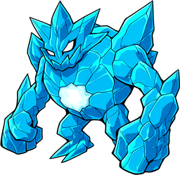 | アイスゴーレム fgolem | 280 | 36 | ためる→ためる→おおわざ こうげき→ためる→ためる→おおわざ | 30（50%） | 大技×3（雑魚は2.4上限） |
| ロックタートル turtle | 195 | 30 | ためる→おおわざ ためる→ためる→おおわざ こうげき→ためる→ためる→おおわざ | 30（55%） | 大技×2.4（雑魚は2.4上限） | |
| シザークラブ crab | 160 | 32 | こうげき→こうげき→おおわざ れんぞく→ためる→おおわざ | 22（50%） | 大技×2（雑魚は2.4上限） |
ボス候補:
| 名前 | 基礎HP | 基礎攻撃 | 行動パターン（出現時に抽選） | シールド(確率) | 特性 | |
|---|---|---|---|---|---|---|
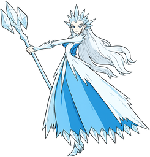 | 氷魔女スカディ skadi | 1300 | 100 | おじゃま→ためる→おおわざ→こうげき 呪撃→ためる→おおわざ→吸血 | 50（45%） | 大技×2.5、お邪魔4個 |
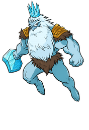 | 霜巨人ヨトゥン jotun | 1500 | 105 | ためる→おおわざ→こうげき→れんぞく こうげき→ためる→ためる→おおわざ | 70（45%） | 大技×2.6 |
プール: サンダーコブラ(軽・中)、雷獣ライジュウ(軽・中)、ミイラ兵(軽・中・重)、キラービー(軽)、サンドジン(中・重)、ゴールドスカラベ(中・重)、ゴーレム(重)、ダークナイト(重)（軽=群れ/序盤枠・中=中盤枠・重=強敵/終盤枠）
| 名前 | 基礎HP | 基礎攻撃 | 行動パターン（出現時に抽選） | シールド(確率) | 特性 | |
|---|---|---|---|---|---|---|
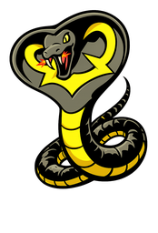 | サンダーコブラ cobra | 175 | 42 | どく→こうげき こうげき→どく→れんぞく どく→れんぞく→こうげき | － | － |
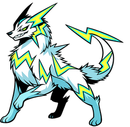 | 雷獣ライジュウ raiju | 180 | 44 | こうげき→おおわざ れんぞく→おおわざ こうげき→れんぞく→おおわざ | － | 大技×1.9（雑魚は2.4上限） |
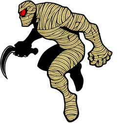 | ミイラ兵 mummy | 200 | 38 | 呪撃→こうげき こうげき→おじゃま→れんぞく おじゃま→こうげき→れんぞく | 15（40%） | お邪魔3個 |
| キラービー bee | 120 | 30 | れんぞく れんぞく→れんぞく→こうげき どく→れんぞく | － | － | |
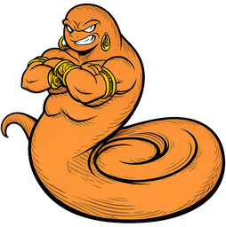 | サンドジン djinn | 190 | 40 | おじゃま→ためる→おおわざ 呪撃→ためる→おおわざ こうげき→おじゃま→ためる→おおわざ | － | 大技×2.3（雑魚は2.4上限）、お邪魔3個 |
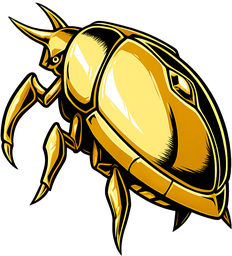 | ゴールドスカラベ scarab | 210 | 36 | こうげき→こうげき→おおわざ ためる→おおわざ→こうげき | 25（55%） | 大技×2（雑魚は2.4上限） |
| ゴーレム golem | 230 | 30 | ためる→ためる→おおわざ ためる→おおわざ→こうげき こうげき→ためる→おおわざ こうげき→こうげき→ためる→おおわざ | 25（45%） | 大技×3.2（雑魚は2.4上限） | |
| ダークナイト knight | 180 | 34 | こうげき→こうげき→おおわざ れんぞく→ためる→おおわざ こうげき→ためる→おおわざ→れんぞく | 25（50%） | 大技×2.2（雑魚は2.4上限） |
ボス候補:
| 名前 | 基礎HP | 基礎攻撃 | 行動パターン（出現時に抽選） | シールド(確率) | 特性 | |
|---|---|---|---|---|---|---|
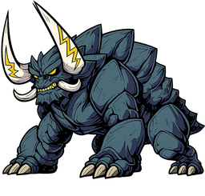 | 雷獣王ベヒモス behemot | 1600 | 108 | こうげき→れんぞく→ためる→おおわざ れんぞく→れんぞく→ためる→おおわざ | 60（45%） | 大技×2.4 |
| 砂王スフィンクス sphinx | 1450 | 102 | おじゃま→どく→ためる→おおわざ どく→呪撃→ためる→おおわざ | 55（45%） | 大技×2.5、お邪魔4個 |
プール: グール(軽・中・重)、バンシー(軽・中)、スケルトン兵(軽)、亡霊騎士レイス(軽・中)、邪眼オクルス(中・重)、ナイトメア(中・重)、ボーンナイト(重)、ガーゴイル(重)（軽=群れ/序盤枠・中=中盤枠・重=強敵/終盤枠）
| 名前 | 基礎HP | 基礎攻撃 | 行動パターン（出現時に抽選） | シールド(確率) | 特性 | |
|---|---|---|---|---|---|---|
| グール ghoul | 210 | 40 | 吸血→こうげき 吸血→れんぞく 吸血→こうげき→れんぞく | － | － | |
| バンシー banshee | 185 | 40 | おじゃま→ためる→おおわざ 呪撃→吸血 おじゃま→吸血→ためる→おおわざ | － | 大技×2.4（雑魚は2.4上限）、お邪魔4個 | |
| スケルトン兵 skel | 145 | 31 | こうげき→こうげき→れんぞく れんぞく→こうげき→こうげき | 15（40%） | － | |
| 亡霊騎士レイス wraith | 155 | 33 | 吸血→ためる→おおわざ 吸血→れんぞく→ためる→おおわざ | － | 大技×2.2（雑魚は2.4上限） | |
| 邪眼オクルス eye | 190 | 40 | ためる→おおわざ おじゃま→ためる→おおわざ 呪撃→ためる→おおわざ | 15（40%） | 大技×2.6（雑魚は2.4上限）、お邪魔3個 | |
| ナイトメア mare | 195 | 42 | れんぞく→こうげき→おおわざ れんぞく→ためる→おおわざ | － | 大技×2（雑魚は2.4上限） | |
| ボーンナイト bonek | 250 | 42 | こうげき→こうげき→おおわざ れんぞく→ためる→おおわざ こうげき→ためる→おおわざ→れんぞく | 30（50%） | 大技×2.2（雑魚は2.4上限） | |
| ガーゴイル gargo | 190 | 31 | ためる→おおわざ こうげき→ためる→おおわざ ためる→ためる→おおわざ れんぞく→ためる→おおわざ | 30（55%） | 大技×2.2（雑魚は2.4上限） |
ボス候補:
| 名前 | 基礎HP | 基礎攻撃 | 行動パターン（出現時に抽選） | シールド(確率) | 特性 | |
|---|---|---|---|---|---|---|
| 屍竜ドラクリッチ bdragon | 1750 | 110 | 吸血→おじゃま→ためる→おおわざ おじゃま→吸血→ためる→おおわざ→れんぞく | 70（45%） | 大技×2.5、お邪魔4個 | |
| 夜の女王ノクターナ noct | 1650 | 108 | 吸血→ためる→おおわざ→呪撃 呪撃→吸血→ためる→おおわざ | 60（40%） | 大技×2.6、お邪魔4個 | |
| 星喰龍ヴォラクス vorax | 1950 | 112 | こうげき→ためる→おおわざ→れんぞく→おじゃま れんぞく→おじゃま→ためる→おおわざ→こうげき | 80（45%） | 大技×2.5、お邪魔4個 |
プール: ヴォイドスライム(軽・中)、カオスインプ(軽・中)、ボイドゲイザー(軽・中・重)、バンシー(軽)、コスモビースト(中・重)、ダークドライアド(中)、ヴォイドドレイク(重)、ボーンナイト(重)、ダークナイト(重)（軽=群れ/序盤枠・中=中盤枠・重=強敵/終盤枠）
| 名前 | 基礎HP | 基礎攻撃 | 行動パターン（出現時に抽選） | シールド(確率) | 特性 | |
|---|---|---|---|---|---|---|
| ヴォイドスライム voids | 230 | 40 | 呪撃→こうげき おじゃま→こうげき→おおわざ おじゃま→呪撃→おおわざ | 20（45%） | 大技×2（雑魚は2.4上限）、お邪魔4個 | |
| カオスインプ kaos | 200 | 44 | れんぞく→れんぞく→こうげき 呪撃→れんぞく おじゃま→れんぞく→れんぞく | － | お邪魔3個 | |
| ボイドゲイザー gazer | 210 | 42 | ためる→ためる→おおわざ おじゃま→ためる→おおわざ 呪撃→ためる→ためる→おおわざ | － | 大技×2.8（雑魚は2.4上限）、お邪魔3個 | |
| バンシー banshee | 185 | 40 | おじゃま→ためる→おおわざ 呪撃→吸血 おじゃま→吸血→ためる→おおわざ | － | 大技×2.4（雑魚は2.4上限）、お邪魔4個 | |
| コスモビースト cosmo | 260 | 44 | こうげき→ためる→おおわざ れんぞく→こうげき→ためる→おおわざ | 25（45%） | 大技×2.3（雑魚は2.4上限） | |
| ダークドライアド dryad | 165 | 35 | なかま回復→おじゃま おじゃま→こうげき なかま回復→こうげき なかま回復→呪撃 | － | お邪魔3個、仲間回復×1.7 | |
| ヴォイドドレイク drake | 270 | 44 | こうげき→ためる→おおわざ→れんぞく れんぞく→ためる→おおわざ→こうげき | 30（50%） | 大技×2.4（雑魚は2.4上限） | |
| ボーンナイト bonek | 250 | 42 | こうげき→こうげき→おおわざ れんぞく→ためる→おおわざ こうげき→ためる→おおわざ→れんぞく | 30（50%） | 大技×2.2（雑魚は2.4上限） | |
| ダークナイト knight | 180 | 34 | こうげき→こうげき→おおわざ れんぞく→ためる→おおわざ こうげき→ためる→おおわざ→れんぞく | 25（50%） | 大技×2.2（雑魚は2.4上限） |
ボス候補:
| 名前 | 基礎HP | 基礎攻撃 | 行動パターン（出現時に抽選） | シールド(確率) | 特性 | |
|---|---|---|---|---|---|---|
| 真魔王ヴァルガ demonx | 2100 | 115 | 呪撃→ためる→おおわざ→こうげき→吸血→ためる→おおわざ 吸血→呪撃→ためる→おおわざ→れんぞく→ためる→おおわざ | 90（45%） | 大技×2.6、お邪魔5個 |